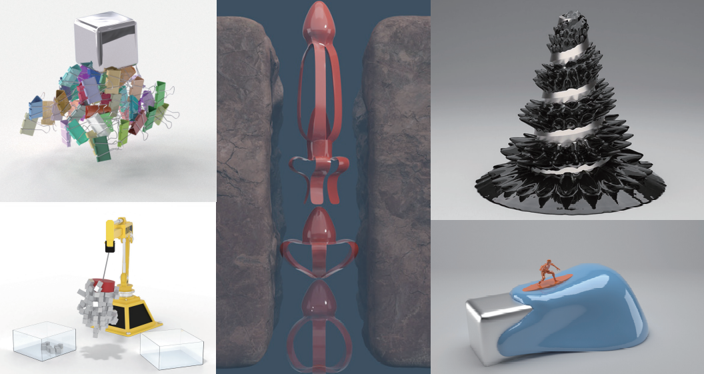
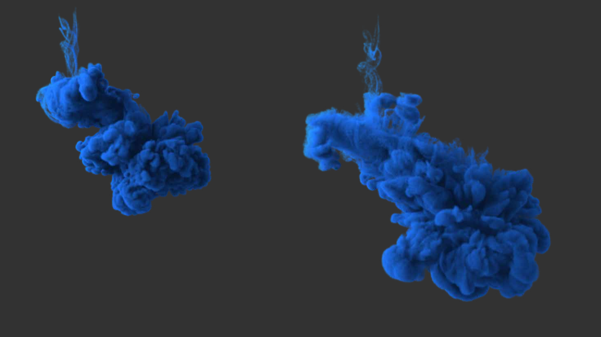
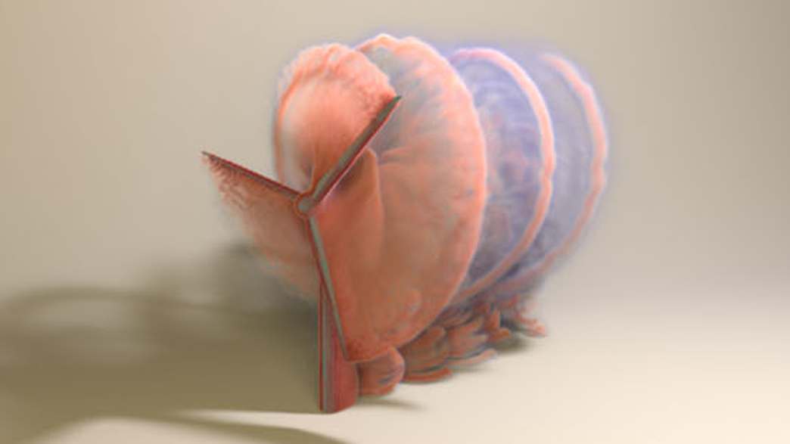
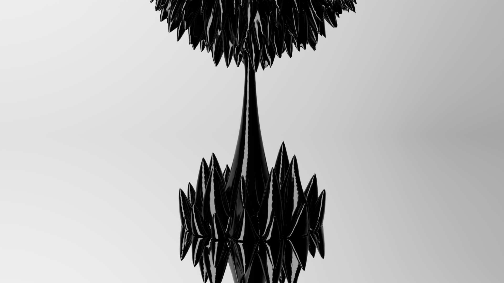
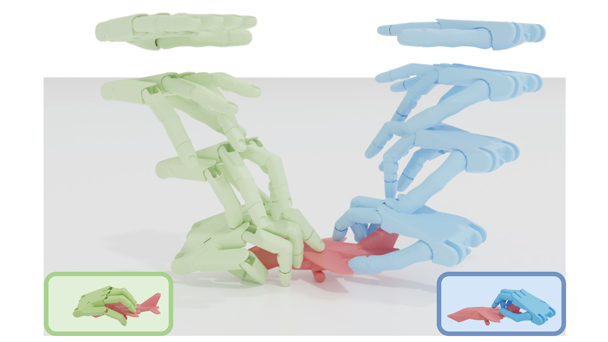
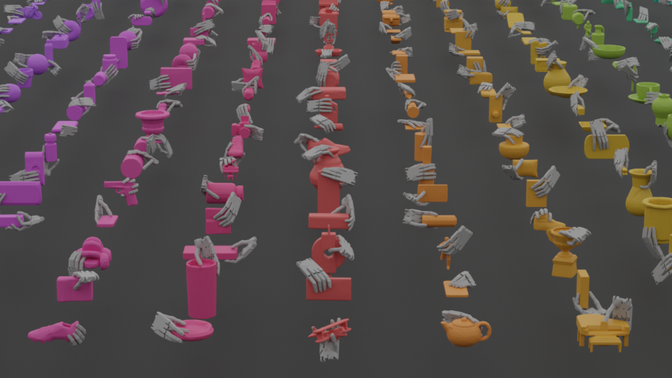

Publications

Magnetic Modeling and Simulation for Computer Graphics
Xingyu Ni†, Yuechen Zhu, Ruicheng Wang, Bin Wang
Computer Graphics Forum (Eurographics 2026) State of the Art Report

EDGE: Epsilon-Difference Gradient Evolution for Buffer-Free Flow Maps
Zhiqi Li*, Ruicheng Wang*, Junlin Li*, Duowen Chen, Sinan Wang, Bo Zhu†
ACM Transactions on Graphics (SIGGRAPH 2025)

Leapfrog Flow Maps for Real-Time Fluid Simulation
Yuchen Sun, Junlin Li, Ruicheng Wang, Sinan Wang, Zhiqi Li, Bart G. van Bloemen Waanders, Bo Zhu†
ACM Transactions on Graphics (SIGGRAPH 2025)

An Induce-on-Boundary Magnetostatic Solver for Grid-Based Ferrofluids
Xingyu Ni*, Ruicheng Wang*,
Bin Wang†, Baoquan Chen†
ACM Transactions on Graphics (SIGGRAPH 2024) Technical Papers Trailer

UniDexGrasp: Universal Robotic Dexterous Grasping via Learning
Diverse Proposal Generation and Goal-Conditioned Policy
Yinzhen Xu*, Weikang Wan*, Jialiang Zhang*, Haoran Liu*, Zikang
Shan, Hao Shen, Ruicheng Wang, Haoran Geng, Yijia Weng, Jiayi
Chen, Tengyu Liu, Li Yi,
He Wang†
CVPR 2023

DexGraspNet: A Large-Scale Robotic Dexterous Grasp Dataset for
General Objects Based on Simulation
Ruicheng Wang*, Jialiang Zhang*, Jiayi Chen, Yinzhen Xu, Puhao
Li, Tengyu Liu,
He Wang†
ICRA 2023 Outstanding Manipulation Paper Award Finalist
@article{2210.02697,
title = {DexGraspNet: A Large-Scale Robotic Dexterous Grasp Dataset for General Objects Based on Simulation},
author = {Ruicheng Wang and Jialiang Zhang and Jiayi Chen and Yinzhen Xu and Puhao Li and Tengyu Liu and He Wang},
journal={arXiv preprint arXiv:2210.02697},
year = {2022}
}